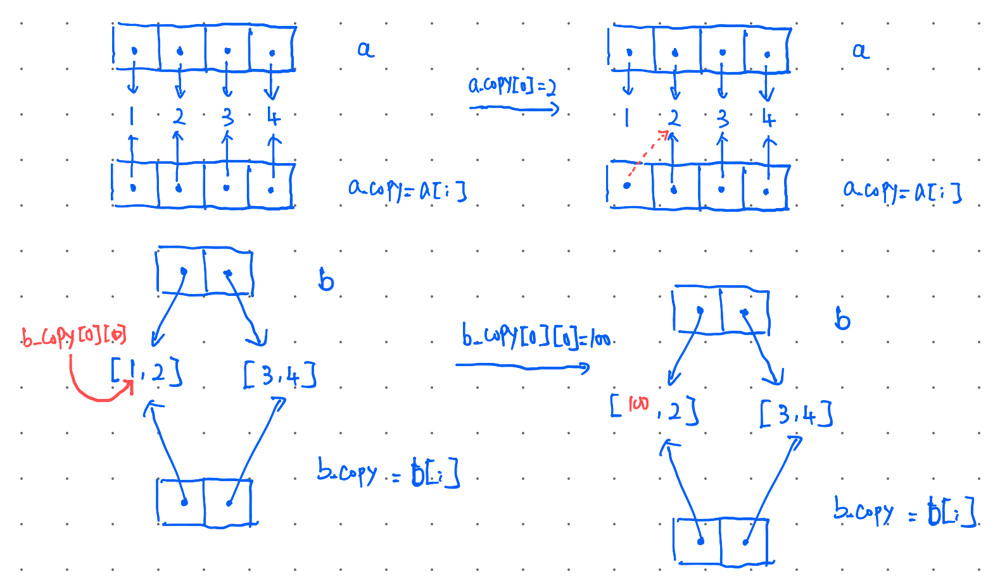

Python Tricks Learned From Projects
Show all submodules
I need to import a particular function formulate from a file in the directory <path-to-the-package>/coinor/dippy/examples/milp/milp_func.
It’s clear that I need to import it from the submodule coinor.dippy. But how to do it exactly?
Use following commands, which list all submodules you can import.
|
|
Relavant outputs are
|
|
Then I can simply use
|
|
Using the right kernel for Jupyter Notebook
|
|
Running Jupyter Notebook from the remote server
Reference
On the server side:
-
Create following two functions in the
.bashrcand reload it usingsource .bashrc1 2 3 4 5 6 7 8 9 10 11 12 13 14 15function Inode(){ # provide the computation node name; default is polyp2 local nodename="${1:-polyp2}" echo "starting an interactive section at $nodename" # start an interactive session in the given node qsub -l nodes=$nodename:ppn=4 -l walltime=1:00:00 -l mem=10gb,vmem=10gb -I } function jpt(){ # provide the port; default is 1234 local port="${1:-1234}" echo "open jupyter notebook at $(hostname):$port" # Fires-up a Jupyter notebook by supplying a specific port and ip jupyter notebook --no-browser --port=$port --ip=$(hostname) } -
In the server side’s terminal, if
- If you want to start the jupyter notebook in the login node, just call
jpt; - If you want to start the jupyter notebook in the computation node, call
Inodefirst and then when you are prompted to the computation node, then calljpt. For example, if the comutation node name ispolyp3, then callInode polyp3and then calljpt 1234.
- If you want to start the jupyter notebook in the login node, just call
On the local side:
-
Create following two functions in the
.bashrcand reload it usingsource .bashrc1 2 3 4 5 6 7 8 9 10 11 12function jptt(){ local localport="${1:-2234}" local servername="${2:-polyp1}" local serverport="${3:-1234}" # Forwards port $1 into port $3 and listens to it ssh -N -f -L localhost:$localport:$servername:$serverport yud319@polyps.ie.lehigh.edu } function stopjpt(){ local localport="${1:-2234}" lsof -i tcp:$localport |awk 'NR > 1 {print $2}' | xargs kill -9 echo "Kill port $localport" } -
Call
jptton the local terminal, which will listen to the jupyter notebook host on the server. -
In the browser, if the port on local side is set to
2234, the just typelocalhost::2234. -
After finish the job, call
stopjpt, which will free the local port.
copy and deepcopy caveats
- slicing in the list: slicing operator and assigning in Python makes a shallow copy of the sliced list. But the following example can be confusing.
|
|
output:
a: [1, 2, 3, 4]
a_copy:[2, 2, 3, 4]
b: [[100, 2], [3, 4]]
b_copy:[[100, 2], [3, 4]]
c: [[1, 2], [3, 4]]
c_copy:[[-1, -1], [3, 4]]
explaination: the original list is copied to a new list object. Just all elements within the list are not copied, so if the list contains a mutable object (ints are not mutable) changing that object will change it in both the original and the copied list because both have a copy of the reference to the same object.

Matplotlib caveats
Sometimes your x-axis label contains underscore _. Since in the backend matplotlib shall use Tex to render texts, such special characters shall cause issues.
If you x-axis happens to be in a column of the pd.DataFrame, you can easily change the _ to - by using
|
|